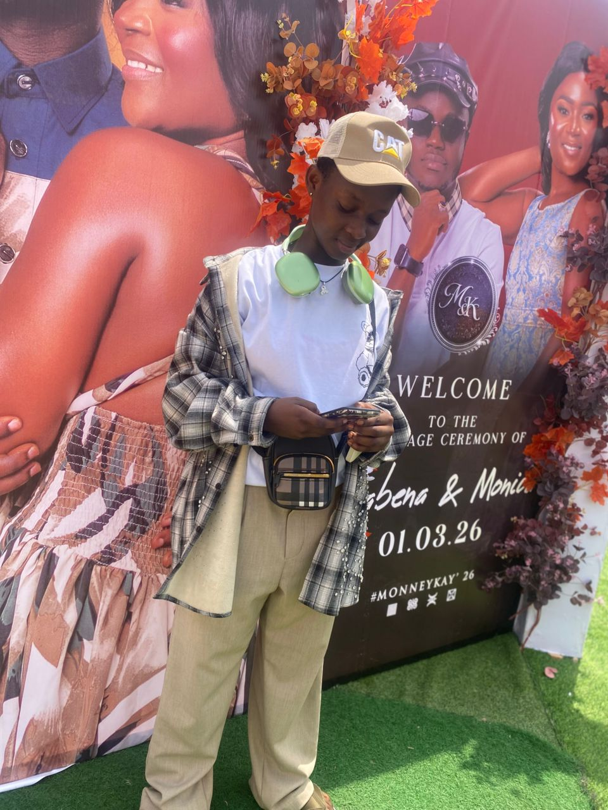

HTML
Building the structure and content of webpages.
LEARNINGCOMPUTER SCIENCE STUDENT
Hello, world! I'm
I’m learning how technology works and using creativity to turn ideas into digital experiences. This is where I share my journey, skills and projects.

01 / INTRODUCTION
I’m RHICH, a student at Bosomtwe Girls' STEM High School, exploring the exciting world of Computer Science.
I enjoy learning new things, solving problems and discovering how ideas can become useful technology. This portfolio is a record of my progress as I develop my skills and create more projects.
02 / TOOLKIT
Every expert starts as a beginner. These are the tools I'm currently learning and practising.
Building the structure and content of webpages.
LEARNINGDesigning layouts, colours and responsive interfaces.
LEARNINGExploring interactivity and the logic behind websites.
LEARNING03 / THE ROAD AHEAD
A few milestones I’m working towards as I grow into a confident technology creator.
Practise HTML, CSS and JavaScript by creating small, useful websites.
Turn ideas into working projects, test them and improve them with feedback.
Learn new tools, collaborate with others and use technology to solve problems.
04 / SELECTED WORK
A growing collection of experiments, school work and personal projects.
PERSONAL WEBSITE
My personal website, created to practise web development and share my growth as a Computer Science student.
This is just the beginning. More projects will be added as I build them.
05 / CODE & COMMUNITY
I’m building my coding journey one project at a time. Visit my GitHub profile to follow my progress and explore my repositories.
MY DEVELOPER PROFILE
Follow my learning journey, see my code and discover the projects I share.
06 / GROWTH IN PROGRESS
A growing record of what I’m learning and working towards. New achievements will be added as I earn them.
Practising HTML, CSS and JavaScript to create websites.
Using this portfolio to document projects and progress.
Creating useful digital experiences and publishing them as I learn.
07 / GET IN TOUCH
Thank you for visiting my portfolio. I'm excited to keep learning, creating and connecting.